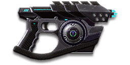

← Back to the Manticore SX40 comparison
Sage Guide · Vanu Sovereignty · Pistol
The 325-cert VS pistol — 200 damage a shot, 351 RPM, a 15-round magazine, and the best damage range of the semi-autos. Every class but the MAX can carry it; this page teaches you to finish fights with it.
The one-line verdict: Five chest shots in 0.68 s, three to the head in 0.34 s, and nothing about it that demands an apology. The Manticore is the pistol you buy when you want a sidearm that simply works — and its special ammo slows whoever you hit, which is the closest thing to a free kill in the game.

The Manticore SX40 · Vanu Sovereignty · 325 certs (250 DBC) · 15-round magazine
Picture the scene, because you've probably lived it: you're sprinting across a courtyard, an enemy appears, and you do everything at once — mash the trigger while you're still running, then press aim-down-sights (ADS) a split-second later, finger still down. The sight picture snaps in, it looks precise… and your bullets spray everywhere except the man in your crosshair. He kills you. It feels like the game cheated. It didn't — here's what actually happened.
You started firing from a sprint, from the hip. Sprinting is the least accurate state in the game: your cone of fire starts at 7.0° — fully bloomed, the widest it can ever be. Every shot you fire from the hip widens it further still (+0.14° per shot).
Then you pressed ADS mid-hold — and nothing reset. Aiming down sights does not shrink a cone of fire that is already bloomed. The scope only gives you a precise picture; the bullets keep flying out of the wide cone you built while running and hipfiring. That's the whole mystery: accurate-looking aim, wildly inaccurate gun.
Two timers stack the deck further: your gun needs about 0.3 s to settle after a sprint, and raising the sight itself takes ~0.15 s. Trigger held through all of it means your first half-second of fire is pure confetti.
1 · Feet. Let go of sprint (and the trigger, if you're already holding it). Stop, or drop into a strafe — anything but a full sprint.
2 · Sight. Press ADS and let the sight come up. This takes a heartbeat — that's fine, a quarter-second of patience is cheaper than a magazine of misses.
3 · Trigger. Now fire — from the aimed cone of 0.3°. First shots land where the dot points, and you control the bloom from zero instead of inheriting a maxed-out cone.
Stop → aim → fire. If you take one habit from this entire page, take this one. You'll practise exactly this rhythm in the simulator in section 04.
Four beats, left to right — the same mistake the cards above describe, drawn out.
1 · SprintingYour cone starts maxed at 7.0° — the widest it can ever be.
2 · Trigger heldFiring from the hip while running — every shot adds bloom.
3 · ADS, mid-holdThe sight looks precise — but aiming down sights does not reset bloom.
4 · The sprayBullets fly out of the wide cone you built. The enemy walks away.
Same fight, done right. Each beat has a job, and the order is the whole lesson.
1 · StopLet go of sprint (and the trigger). About 0.3 s for the gun to settle.
2 · AimPress ADS and let the sight come up (~0.15 s).
3 · FireNow fire — from the aimed cone. First shots land where the dot points.
The exception — under ~8 m, skip the whole danceHipfire works, no ADS needed, and stopping is optional. Keep moving, strafe, and let the hipfire ring do the work.
Every enemy infantry has 1,000 health (500 shield + 500 health). Your bullet does 200 damage up close, fading to 112 at long range. Headshots count double, leg shots count less (×0.9). That gives you three numbers worth memorising:
| Range | Damage | Head | Chest | Legs | Chest vs shielded Heavy |
|---|---|---|---|---|---|
| Close · 5 m | 200 | 3 | 5 | 6 | 8 |
| Close · 10 m | 200 | 3 | 5 | 6 | 8 |
| Mid · 25 m | 180 | 3 | 6 | 7 | 9 |
| Far · 40 m | 151 | 4 | 7 | 8 | 10 |
Perfect-accuracy times to kill: 3 headshots ≈ 0.34 s, 5 chest shots ≈ 0.68 s up close. At 25 m: 3 headshots ≈ 0.34 s, 6 chest shots ≈ 0.85 s. Headshots cut the kill time by 100% up close — the single biggest damage upgrade you own, and it's free.
Reload takes 1.60 s with rounds left in the magazine, 1.9 s from empty. You carry 75 rounds in reserve.
Full power to 15 m, then a steady slide to minimum at 60 m. Past 15 m the kill costs an extra bullet or two — and past 60 m you're at the floor.
One gun, three fighting styles. The right technique changes with distance — use the range finder below to see what your bullets do at any range, then learn the three bands underneath it.
How to fight hereAim down sights at the upper chest and neck. Tap on the 171 ms cadence — your recoil climbs into the head for free damage.
Aim: centre of the chest, from the hip. Keep moving.
Scoping in costs you time and drops your speed to 0.75× — at arm's length that gets you killed. Standing still, your first 3 hipfire shots stay tighter than the strafing cone — after that, bloom has widened you past it, so you may as well be moving.
Aim: neck / upper chest. Single taps, one every 171 ms.
This is where the gun earns its keep: still 180 damage at 25 m, and a 15-round magazine that forgives a miss. Start your crosshair at the neck — the natural upward climb walks your shots into the head, and 3 head hits end the fight up close in 0.34 s. Strafe while scoped; at 0.75× you move faster aimed than a scoped Heavy, and a moving target still beats a still one.
Aim: chest. Single taps, one at a time, with a real pause between them.
At 112 damage you need 7 chest hits — a long, loud advertisement of your position. Take these shots at stationary or fleeing targets, medics reviving, and engineers on turrets. Otherwise, your better play is to close the distance behind cover. Knowing when not to shoot is a skill too.
Your accuracy is decided by two things before skill even enters it: what your body is doing (your stance sets the starting cone of fire) and what your finger is doing (each tap grows that cone by 0.07° aimed). The Manticore SX40 is semi-automatic — one click, one round — so “firing modes” are something you do with your finger, not a setting on the gun.
| Stance | Starting cone | What it means for you |
|---|---|---|
| Sprinting | 7.0° | Maxed out — the widest the cone can be. This is the section 01 disaster: never start firing from a sprint. |
| Hipfire, moving | 1.5° | Walking or strafing from the hip. Fine inside ~8 m, leaks rounds past the target beyond it. |
| Hipfire, standing | 1° | Your point-blank default. The 0.14 m ring at 8 m in section 05 is this stance drawn out. Standing still, your first 3 hipfire shots stay tighter than the strafing cone — after that, bloom has widened you past it, so you may as well be moving. |
| Hipfire, crouched | 1° | The tightest hipfire you have (1.5° if you crouch-walk). Crouch when holding a doorway from the hip. |
| Aimed (ADS), feet planted | 0.3° | Standing or crouched makes no difference here — about 3 times tighter than hipfire. This is why section 01's order matters. |
| Aimed (ADS), strafing | 0.3° | The moving floor — the same as standing still, so strafing costs you nothing in cone size on this gun. You still move at 0.75× while scoped, faster than most guns' 0.5×. Strafe between shots to stay hard to hit; plant your feet while you fire. |
| Mode | How your finger does it | Use it at |
|---|---|---|
| Tap-fire — the only mode | One click, one round | Everything, 0–25 m. The gun fires exactly as fast as you tap — up to one round every 171 ms. |
| Fast tapping | Clicks at the 171 ms cadence | Close and mid range. The rhythm in the trainer below: every click fires, every round lands. |
| Slow deliberate taps | One click, a real pause, one click | 25 m and out. Slow, but every round goes where the dot is. |
A target 10 m away, aiming down sights. Tap FIRE (mouse, touch, or hold Space with the button focused) — one click, one round. Click faster than the 171 ms refire and the gun simply doesn't fire: that's a wasted click. Click on the cadence and every round lands. Aim for one tap every 171 ms. This practice window is shared by the whole Sage series: it's driven by a weapon profile plugged into the window — here the Manticore SX40's (351 RPM, 0.3° starting cone, 0.07° bloom per shot, target at 10 m) — and the spread is drawn at true scale from those numbers.
Cone of fire — fills as you fire, empties when you pause.
Your taps will be graded here — one tap per 171 ms, no mashing.
Some things are easier to show than to say. Here's what your bullets actually do: how wide hipfire spreads at 8 metres, what a good firing rhythm looks like, and what the 2x sight really changes. The hands-on version — firing it yourself — is the practice window in section 04.
A full-size target 8 m away — an arm's-length room fight. The rings show where hipfire rounds land around your aim point (the chest). Sizes are drawn to scale from the gun's real cone-of-fire numbers.
Read it this way: standing still, the 0.14 m ring fits well inside the chest — most rounds hit a target this size, which is why hipfire works point-blank on this gun. Move and it grows to 0.21 m — still inside the torso — so even strafing hipfire stays on him at arm's length. The rings only grow with distance while the man doesn't, so past ~10 m they start leaking past him: the exact moment to switch to aiming down sights, where the spread shrinks to 0.04 m wide. (Ring sizes use the real geometry: spread diameter = 2 × distance × tan(cone ÷ 2).)
Every shot widens your cone of fire ("bloom"). A short pause resets it. Same 15 rounds, two very different outcomes:
The target rhythm is one tap per 171 ms — the gun's refire. Faster clicks are wasted; slower taps bleed time. The trainer in section 04 grades your taps live — one tap every 171 ms, every round on target.
No zoom. The target at 15 m is small but the view is wide open — you see the crate, the tower, and the next enemy coming. Fast to aim, nothing blocks your edges. Best inside ~15 m.
Same target, same 15 m — but he looks twice as tall, so placing shots on his chest and head gets much easier. The price: your view narrows to the round window, the crate and tower are gone, and close targets feel fast and huge. Best at 10–25 m.
That's the whole 30-cert decision from section 06 in one picture: 1x for awareness, 2x for precision. Most veterans carry both and swap per base — indoors 1x, open ground 2x.
The Manticore SX40 ships bare — iron sights, no rail, no barrel. Nothing here is free except the gun itself, so buy in the order shown and stop whenever the gun feels right. Every optic costs 30 certs; every barrel, rail and ammo option costs 100, except KCAP at 200.
A true 1x reflex — no magnification, just a clean, glowing dot.
Good when: room-to-room fighting, where you want to keep both eyes open.
Bad when: you're picking targets off at 25 m, where the 2x pulls them in.
A clean 2x — same as the 1x, but the target twice as big.
Good when: mid-range aim, and for your first aim point — the neck — the target is small.
Bad when: hipfire fighting at point blank, where the narrower view costs you awareness.
No 3.4x/4x scopes and no HS/NV on pistols — the 1x and 2x are the whole optic shelf.
Cuts vertical recoil by 30% (0.8° → 0.56°). Costs you: hipfire spread grows 15%, and enemies see you on the minimap from 35 m farther away when you fire. (The wiki doesn't list the Compensator for this gun; the 100-cert cost is the series standard.)
Good when: you mostly aim down sights at mid-range and the upward climb bothers you.
Bad when: hipfire builds and sneaky play — you get louder on the map and sloppier from the hip.
You vanish from the minimap when firing and your shots are quiet. In exchange, damage starts dropping off 20 m sooner and bullets fly 15% slower (325 → 276 m/s) — harder to lead moving targets.
Good when: sneaking around a base, or flanking squads that check their minimap after every death.
Bad when: front-line fighting — and note the price on this gun: full damage only reaches 15 m, so with a suppressor it starts fading almost as soon as it leaves the muzzle. You pay the damage cost for stealth you don't need.
Hides your muzzle flash so your own view stays clear at night — but you appear on enemy minimaps from 15 m farther away.
Good when: night fights, or when you already run the Darklight and want your flash hidden too.
Bad when: stealth play — the minimap cost works against it.
Nothing at all on the muzzle — the gun as designed.
Good when: most of the time. The barrel slot is where you trade damage and hipfire for stealth or control — don't trade unless you know what you're trading for.
Bad when: you genuinely need the stealth or the recoil control above.
Hipfire accuracy improves by a third (33% tighter cone).
Good when: your default rail — the hipfire bonus is the one that wins pistol fights.
Bad when: if you only ever ADS at mid-range, the bonus sits unused — take the Extended Magazine instead.
A small torch that catches infiltrators in camouflage and exposes them on the minimap at 30 m. Its beam is visible to everyone — and it turns you into a glowing target in a dark base.
Good when: the enemy is running a lot of stalkers and your squad is losing them in the dark.
Bad when: you're the one sneaking — it gives away your position at a distance.
Increases the amount of ammunition in each magazine by 4 rounds, and the weapon takes 15% longer to equip and unequip.
Good when: finishing a second enemy after the first one is down, or covering a doorway between primary reloads.
Bad when: you swap weapons constantly — that 15% slower equip is felt on every pull.
Manticore Ammunition reduces the movement speed of enemy infantry by 20% for 2 seconds, but reduces the weapon's projectile velocity by 40% at all times (325 → 195 m/s).
Good when: chasing down fleeing enemies, or duelling at close range where the slow makes them easier to track.
Bad when: long-range shots — 195 m/s bullets need a lot of lead on a moving target.
Standard rounds. The default — and the right default on this gun: all the damage numbers on this page are standard ammo.
Good when: almost always. Manticore Ammunition is a special-purpose tool, not an upgrade.
Bad when: you actually need the special purpose above, and you know it.
A pistol is a sidearm — these builds are the weapon around it. Each one is a whole loadout: primary, sidearm, suit slot, and ability, tuned for a situation. Steal one, play it as written, and change exactly one thing at a time until it fits you.
Primaries this sidearm pairs with: Pulsar VS1 / Terminus VX-9 (Combat Medic) · Serpent VE92 (Light Assault) · Ghost (Infiltrator)
What 325 certs buys you. Genuinely good — learn the gun on this before spending anything.
Pairs with: any starter primary — the Manticore is the finisher, not the plan.
The best value in this whole guide. A clean dot and a tighter hipfire ring for the fights under 10 m where this gun lives.
Pairs with: Pulsar VS1 or Terminus (Medic) — fast primaries whose reloads the Manticore covers.
No minimap blip, quiet shots, tight hipfire. The Infiltrator's loadout: the rifle opens, the Manticore closes, and nobody heard either.
Pairs with: Ghost bolt-action (Infiltrator) — a bodyshot plus three Manticore taps is a kill.
The 2x sight and the compensator stretch the 0.3° aimed cone out to 25 m, the extra rounds buy a fourth kill per magazine, and every hit slows the target by 20% for 2 seconds. The price is velocity: 325 m/s becomes 195 m/s, so lead moving targets.
Pairs with: Orion VS54 (Heavy Assault) — the Manticore finishes at ranges your LMG already owns, and the slow keeps them there.
All four builds are Vanu Sovereignty, all use the Manticore SX40 as the sidearm. Suit slots, abilities and implants are the ones these builds assume — swap them freely; the gun doesn't care, only the playstyle does.
Guides don't make you better — habits do. These six are the whole game for this gun: do them on purpose for a week and they'll be reflexes.
Every gun has a price. Here's where the Manticore SX40 pays — and the habit that covers each hole.
Five chest shots per kill means a full magazine holds three body-shot kills, and a single miss turns the third kill into a reload. There is no way to buy a bigger magazine than the Extended Magazine's +4 — the magazine is the magazine.
Play around it: Make every round count (habit 2), and treat the pistol as a finisher for a wounded enemy, not a primary. Three kills per mag is plenty when the enemy is already hurt.
200 becomes 180 at 25 m and 151 at 40 m — six chest shots at 25 m, seven at 40 m, in 0.86–1.03 s. The 0.3° aimed cone stays decent, but the bullets behind it stop pulling their weight.
Play around it: Treat 25 m as the edge of the Manticore's world. Past it, tap slowly at exposed targets or close the distance — and never trade shots at range with a rifle.
Every hipfire shot adds 0.14° of bloom, so a held hipfire string blooms past the strafing cone after three standing shots. The hip cone starts fine (1.0°) and falls apart if you hold the trigger.
Play around it: Hipfire in single taps or not at all, and strafe from the first shot — your ADS cone is 0.3° and costs nothing to move in, so aim down sights the moment the target is past arm's length.
The slow is real — 20% for 2 seconds on every hit — but your bullets drop from 325 m/s to 195 m/s, the slowest in this set. At 25 m you have to lead a running target by a visible margin, and the slow only helps if the rounds land.
Play around it: Take the ammo for close fights, where the velocity doesn't matter and the slow wins the duel. Leave it off for open ground — standard ammo at 325 m/s hits where you point it.
Five minutes in the VR Training room before you play, every session for a week, and the habits above will be muscle memory. The VR room has targets at every range, no one shooting back, and no cost — use it.